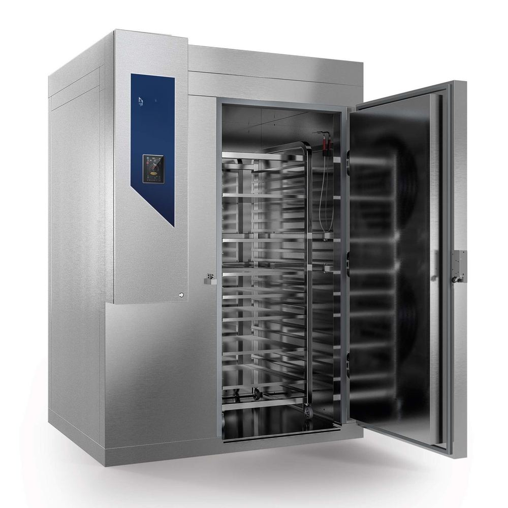

Meat & Poultry Cold Storage in Pakistan — halal-compliant chiller and freezer rooms
Carcass chillers, processed-meat frozen storage, and blast freezers engineered around Pakistani halal slaughter and processing workflows — for poultry, beef, mutton, and processed-meat operations.

Meat and poultry cold storage in Pakistan is one of our largest delivery categories — combining halal slaughter workflow, HACCP food-safety discipline, and the throughput economics of high-cycle processing operations. Whether you're scaling a small butcher shop, a poultry processor for the domestic market, a beef abattoir, or a halal poultry export operation aimed at GCC markets, the engineering principles below apply.
The four temperature zones every meat plant needs
A complete meat or poultry cold-chain operation typically requires four distinct temperature-controlled zones, each engineered around its own purpose:
| Zone | Temperature | Purpose |
|---|---|---|
| Carcass chiller | 0 → +4 °C | Post-slaughter rapid cooling, 24–48 h hold for rigour and trimming |
| Cutting / processing room | +8 → +12 °C | Comfort temperature for operators, slow microbial growth on exposed product |
| Frozen storage | −18 → −25 °C | Long-term hold of finished frozen product |
| Blast freezer | −35 → −40 °C air | Rapid freezing of fresh-cut product to −18 °C core, preserves quality and shelf life |
Each zone has its own sizing logic. The carcass chiller is sized by hot-load entering immediately after slaughter (highest peak demand of any zone). The cutting room sizing is dominated by occupant heat and equipment load, not product. Frozen storage is sized by volume held. Blast freezing is sized by throughput in t/day. Mixing these up is the most common scoping mistake.
Halal-specific design choices
Halal meat operations in Pakistan have specific design requirements beyond generic cold storage:
- Separation between halal and non-halal zones where both are processed on a single site, with documented cross-contamination prevention.
- Slaughter-to-chiller flow designed so carcasses move through the chain without back-tracking — supports both halal certification and HACCP food safety.
- Audit trail visibility — temperature logs, deviation alerts, sanitation records, all aligned to halal certification body audit requirements (e.g., JAKIM for Malaysia exports, GCC GHC for Gulf, individual buyer audits).
- Religious-occasion peak capacity — Eid-al-Adha, Ramadan, Hajj-related demand cycles drive non-trivial peak loads on Pakistani meat operations. Refrigeration sizing should account for at least 1.5× normal-month peak.
HACCP integration
HACCP (Hazard Analysis and Critical Control Points) principles are integrated into our cold-storage design from the start, not bolted on later:
- Temperature monitoring at multiple points (room average, evaporator return, product surface) with continuous data-logging and alarm thresholds set above food-safety limits
- Deviation alarms sent to operator panels and increasingly to mobile devices via cloud monitoring
- Wall and floor finishes rated for direct food contact, easy-clean coved transitions at all panel-to-floor and panel-to-ceiling joints
- Traffic-flow design that separates raw, in-process, and ready-to-pack product
- Sanitation provisions — drainage in cutting rooms designed for daily wash-down, sloped floors, sealed penetrations, drain traps that prevent backflow
- Pest exclusion — entry-door air curtains, sealed wall penetrations, no rodent harbourage paths
Throughput sizing — the t/day relationship
For a meat or poultry processor, the fundamental sizing question isn't "how big is the room" but "how many tonnes per day do you process?" The relationship between throughput and required cold storage volumes is:
- Carcass chiller volume = (peak daily slaughter weight × dwell hours) / chamber utilisation factor. Typical: 1 t/day of slaughter requires roughly 20–25 m³ of chiller volume at standard 24 h dwell.
- Frozen storage volume = days of inventory held × daily output. Most processors target 7–14 days of inventory.
- Blast freezer throughput = peak daily frozen output. Typical batch sizes 0.5–2 t per cycle, cycle times 4–8 h, so a 5 t/day operation needs blast capacity for ~3 cycles per shift.
For precise sizing on your specific throughput, run the numbers through our cold room heat load calculator and condenser sizer, which include presets for halal poultry and meat processing applications.
Equipment and engineering details
Carcass chiller
Walk-in cold room with overhead rail conveyor for hanging carcasses. Refrigeration sized for peak hot-load (carcasses entering at +30–35 °C body temperature). Air distribution designed to avoid surface freezing on lighter cuts while pulling core temperature down rapidly. Typical PIR panel core 80–100 mm.
Cutting and deboning room
Conditioned room rather than refrigerated cold room. Air-handling sized for occupant heat and equipment, target +8 to +12 °C. Wall finishes rated for daily wash-down, drainage in floor.
Frozen storage
Standard frozen warehouse design. PIR panels 100–125 mm, refrigeration to maintain −18 to −25 °C with door-cycling allowance. Insulated doors sized for forklift cycle frequency — high-cycle dock doors often combine high-speed roll-up with full-thickness sliding for thermal sealing.
Blast freezer
Engineered for throughput. Batch chamber design for halal poultry export operations is the most common configuration we deliver — see our blast freezer engineering guide for the full breakdown.
Reference projects
From our portfolio of meat and poultry installations across Pakistan:
- Industrial Blast Freezer — Lahore. 1,800 m³ at −35 °C for processed-poultry export operations.
- Slaughter Line Chiller — Faisalabad. 1,500 m³ at +0 to +4 °C, integrated with HACCP-friendly carcass-flow design.
- Multiple K&N's processing-line cold rooms across multiple sites.
- Smaller halal abattoir cold rooms across Punjab and Sindh.
Frequently asked questions
What temperature do meat cold rooms operate at?
A meat processing facility typically uses four temperature zones: carcass chiller (0 to +4 °C, 24–48-hour hold), cutting room (+8 to +12 °C ambient with HVAC), frozen storage (−18 to −25 °C), and blast freezer (−35 to −40 °C air). Chicken poultry is handled similarly but with shorter dwell at the chiller stage.
What is a poultry cold room and how does it differ from a meat cold room?
A poultry cold room is sized for chicken or turkey carcasses and processed cuts. Engineering is similar to a meat cold room but throughput design differs — poultry processing typically runs faster cycle times and higher unit counts. Halal slaughter and processing protocols are baked into the workflow on Pakistani projects.
Are your cold storage rooms HACCP-compliant?
Yes — we design with HACCP principles from the start. Temperature recording, alarm thresholds, deviation logging, raw/ready-to-eat zone separation, traffic-flow patterns that prevent cross-contamination, easy-clean wall and floor finishes, and validated commissioning documentation are all part of the standard delivery.
Can you build cold storage for a meat export operation?
Yes. Export-grade meat cold storage requires tighter specification: thicker insulation, redundant refrigeration, validated temperature logging with tamper evidence, and documentation aligned with destination market requirements (GCC GHC, EU, Far East). We've delivered halal poultry export facilities for K&N's and similar processors.
What's the typical capacity of a meat cold storage in Pakistan?
Pakistani meat cold storage typically runs from 200 m³ for a small abattoir up to 5,000+ m³ for major processors. We've delivered everything from compact butcher cold rooms to multi-zone industrial facilities including the 1,800 m³ blast freezer in Lahore and the 1,500 m³ slaughter line chiller in Faisalabad.
How much does a poultry cold storage cost in Pakistan?
A 500 m³ poultry chiller typically lands at PKR 12–18 million. A 1,000 m³ poultry frozen storage with blast freezer runs PKR 35–55 million. Export-grade specification adds 15–25%. See our cold storage cost buyer's guide for full pricing breakdown.
Get a cost band for your meat & poultry cold storage in 10 seconds.
World's first intelligent cold store cost calculator. Pakistan-tuned across 12 cities and 24 commodities.
Open the cost calculator →